2024-09-01
@ARTICLE{9393464,
author={Luong, Nguyen Cong and Lu, Xiao and Hoang, Dinh Thai and Niyato, Dusit and Kim, Dong In},
journal={IEEE Communications Surveys & Tutorials},
title={Radio Resource Management in Joint Radar and Communication: A Comprehensive Survey},
year={2021},
volume={23},
number={2},
pages={780-814},
keywords={Radar;Resource management;Radar cross-sections;Interference;Security;Tutorials;Radar detection;Joint radar-communication;spectrum sharing;waveform design;power allocation;interference management;security},
doi={10.1109/COMST.2021.3070399}}韩国电信公司为5g网络的两个频段 (3.5 GHz和28 GHz) 总共支付了33亿美元。
英国，移动网络运营商被要求为2.5 GHz频段 (用于4g网络) 和3.4 GHz频段 (用于5g网络) 支付13亿。
德国，监管机构Bundesnetzagentur透露，移动网络运营商的4频段拍卖总额超过了5亿欧元。
活跃的物联网设备数量预计将达到241亿2030年，需要额外的频谱资源。
美国联邦通信委员会 (FCC) 完成了第一次5g拍卖，出售了28 GHz频谱许可证，筹集了7.02亿美元
雷达系统的基本工作原理是将无线电波发射到空中，然后观察接收到的信号 (从目标物体反射)，以确定物体的特征，例如距离，方向，速度，形状甚至材料。因此，雷达系统可以在军事任务 (例如，检测飞机、船只、间谍无人机 (UAV) 和航天器) 和民用 (例如，机器人、自主车辆和地形探索) 中找到许多应用。
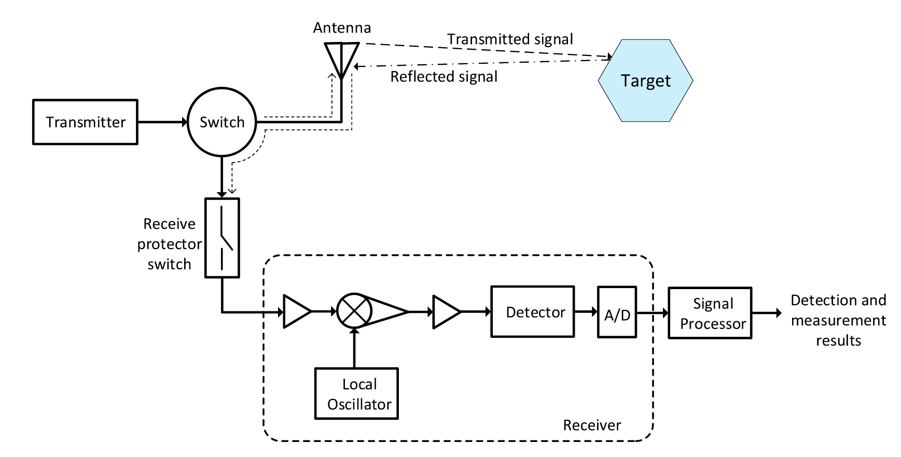
\(R=\frac{c\Delta T}{2}\), \(v=\frac{\sqrt{R_{1}^{2}+R_{2}^{2}-2R_{1}R_{2}\cos\alpha}}{|t_{1}-t_{2}|}\)
\(P_r=\frac{P_tG_tG_r\lambda^2\sigma F^4}{\left(4\pi\right)^3R^4}\)
\(\Delta R=\frac{c\tau}2\), \(\Delta V=\frac{c}{2f_{c}T_{c}},\)
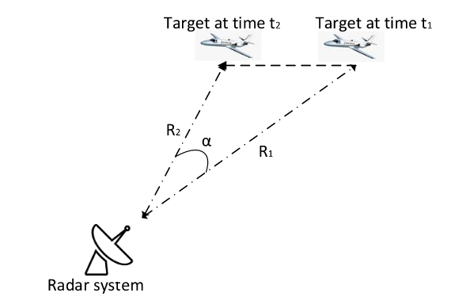
\(\mathcal{X}(\beta,f_D)=\int_{-\infty}^{+\infty}s(t)s^*(t-\beta)e^{i2\pi rf_D}dt\)
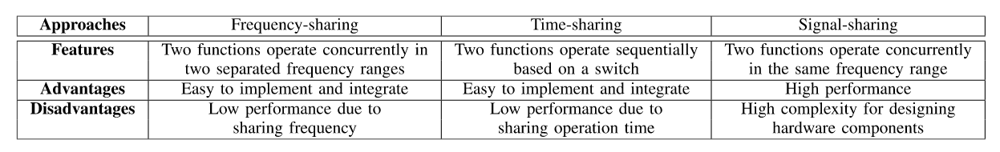
基于频分的方法: 这是JRC系统最简单的方法。具体来说，要同时使用雷达和通信功能，它们将被分配为在分开的天线上运行并以不同的频率传输。
基于时分的方法: 这也是用于将两个功能 (即，雷达和通信) 组合到一个系统中的简单解决方案。这种方法的关键思想是使用开关来选择和控制这两个功能的操作。特别是，对于这种方法，交换机将负责分别控制通信和雷达功能的操作。
双功能雷达通信系统: 这是JRC系统中使用的最流行的方法，尤其是在自治系统中，这主要是由于其出色的功能，例如低成本和频谱使用优化。这种方法的核心思想是将两种功能集成在相同的信号上进行传输。
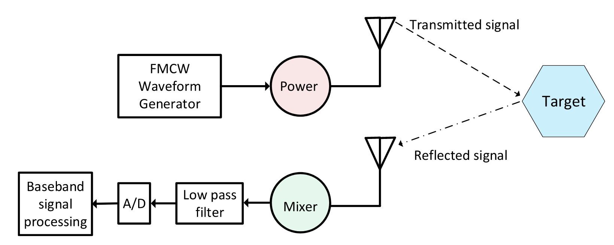
发射信号为：\(s_{\mathrm{T}}(t)=A_{\mathrm{T}}\cos\biggl(2\pi f_{c}t+2\pi\int_{0}^{t}f_{\mathrm{T}}(\tau)d\tau\biggr)\)
接收信号为： \(\begin{aligned} s_{\mathrm{R}}(t)& =A_\text{R}\cos\Bigg(2\pi f_c(t-t_\text{d})+2\pi\int_0^tf_\text{R}(\tau)d\tau\Bigg) \\ &= A_{\mathrm{R}}\cos\biggl\{2\pi\biggl(f_{c}(t-t_{\mathrm{d}})+\frac{B}{T}\biggl(\frac{1}{2}t^{2}-t_{d}t\biggr)+f_{\mathrm{D}}t\biggr)\biggr\} \end{aligned}\)
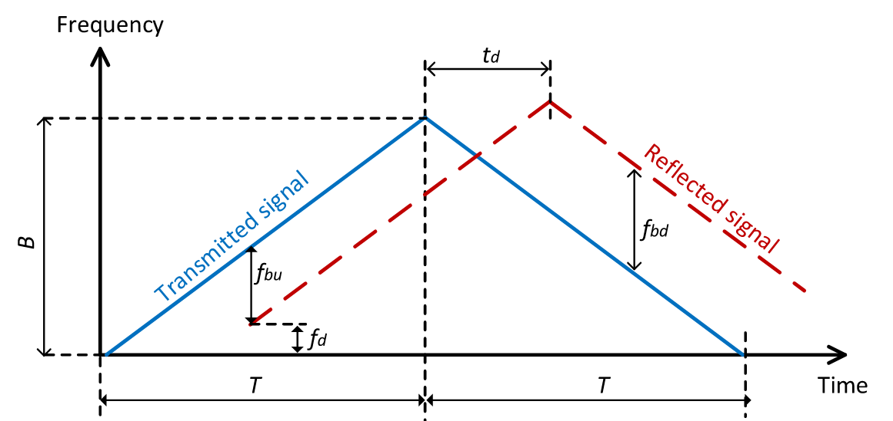
经过混频，中频信号为：\(s_{\text{IF}}(t)=\frac{1}{2}\cos\biggl(2\pi f_c\frac{2R_0}{c}+2\pi\biggl(\frac{2R_0}{c}\frac{B}{T}+\frac{2f_cv}{c}\biggr)t\biggr)\)
并且 \(v=\frac{(f_\mathrm{bu}+f_\mathrm{bd})c}{4f_c}\)，\(R_0=\frac{(f_\text{bu}-f_\text{bd})cT}{4B}\)
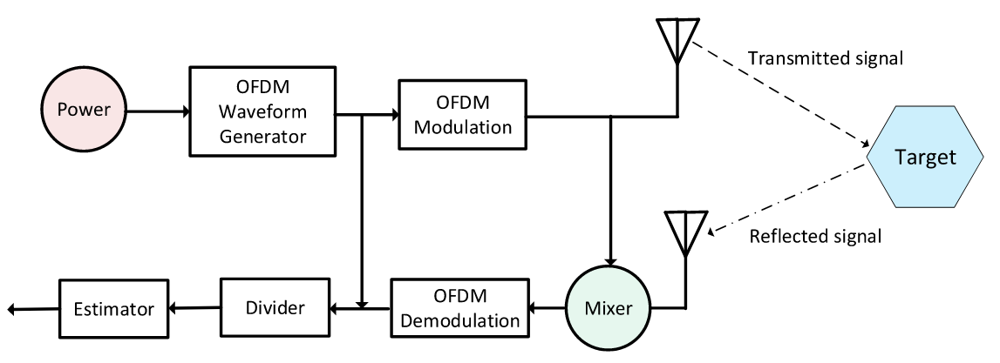
发射信号为：\(\begin{aligned}s(t)&=\sum_{\begin{array}{c}n=0\\\end{array}}^{N-1}\sum_{\begin{array}{c}m=0\\\end{array}}^{M-1}x_{m,n}\text{rect}(t-nT_\text{o})\times e^{j2\pi m\Delta f(t-T_\text{cp}-nT_\text{o})},\end{aligned}\)
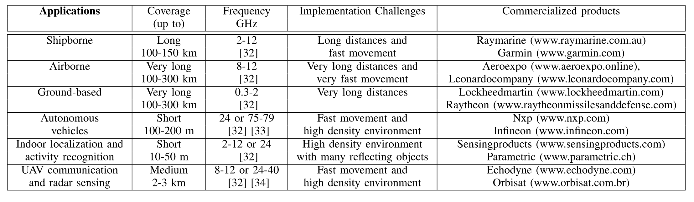
这种方法的一般思想如下。首先，例如通过使用PSK调制将数据比特映射到数据符号中。然后，每个数据符号被调制，即与码序列 (例如m序列) 相乘。假定码序列在接收机处是已知的，例如通过使用同步方案。因此，雷达接收机和通信接收机可以分别通过使用基于相关算法的匹配滤波器来估计目标参数和检测数据符号。
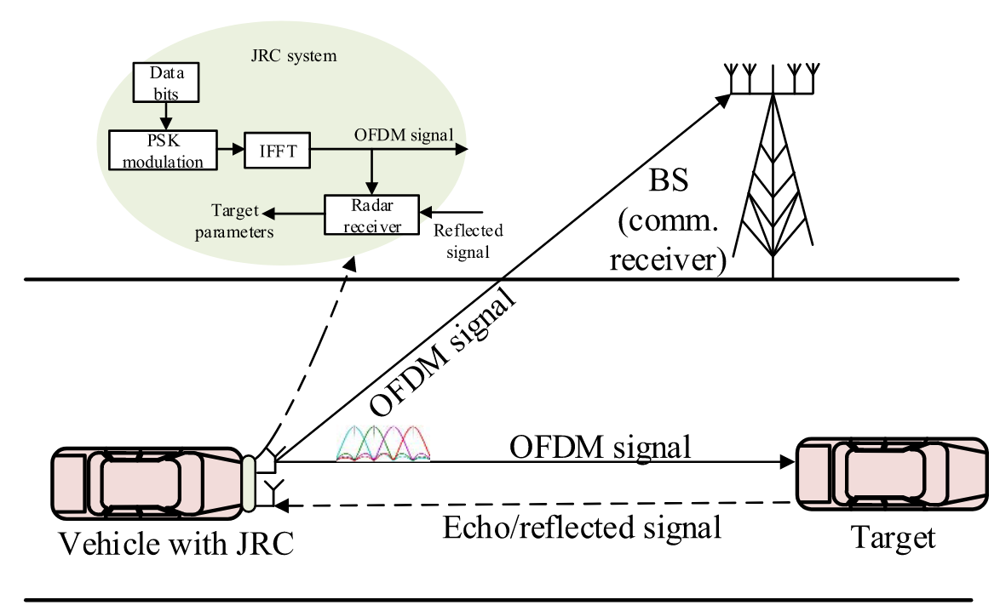
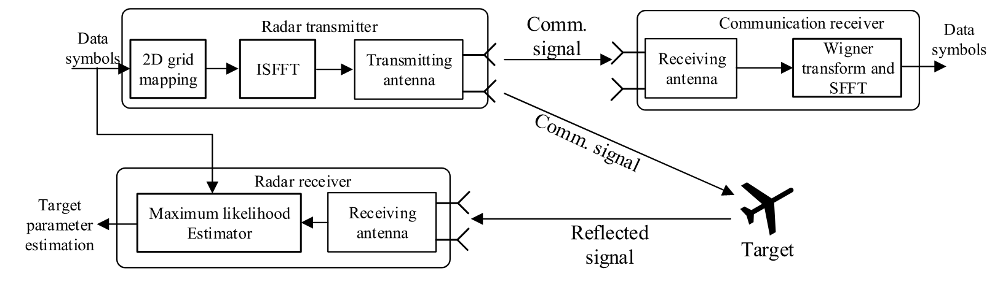
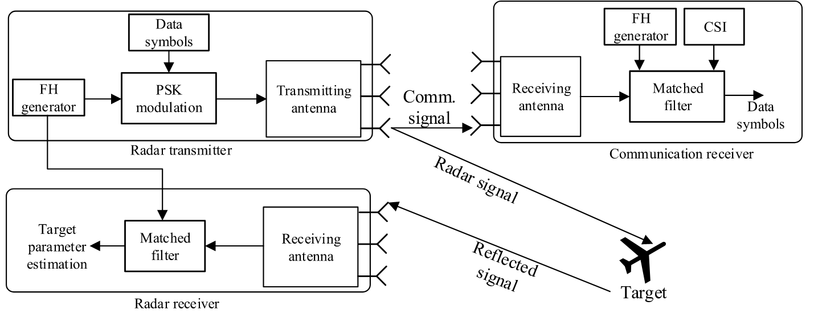
除了FH信号之外，线性调频信号通常应用于雷达系统。chirp信号，也称为扫描信号，是一种频率随chirp速率增加或减少的信号 。在发射啁啾之前，雷达发射器执行所谓的啁啾调制、LFM或FMCW。从目标反射的回波信号由雷达接收机接收。然后，雷达接收机基于发射信号和回波信号之间的相位和频率差，例如通过匹配滤波器，估计目标的距离、速度和方向。通常，在使用FMCM的JRC中，线性调频带宽是影响雷达性能的重要因素。
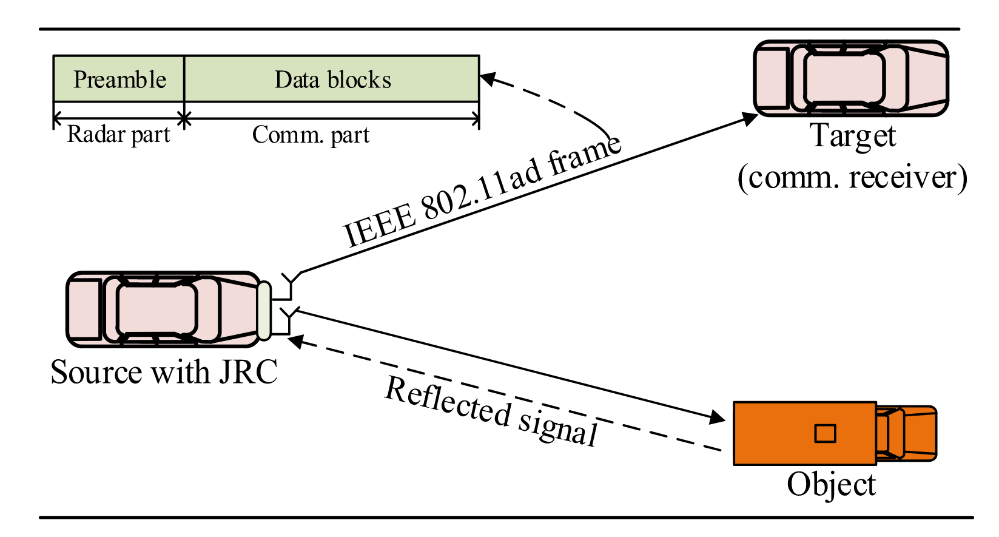
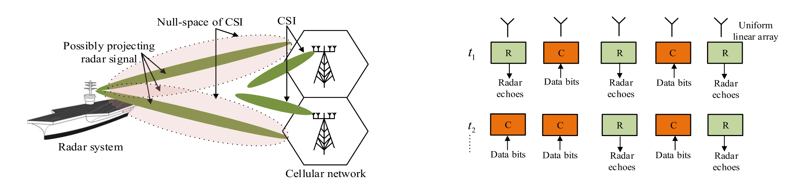
这种方法通常用于共存的雷达和通信系统。关键思想是将雷达信号投射到其通信接收机信道的零空间中。
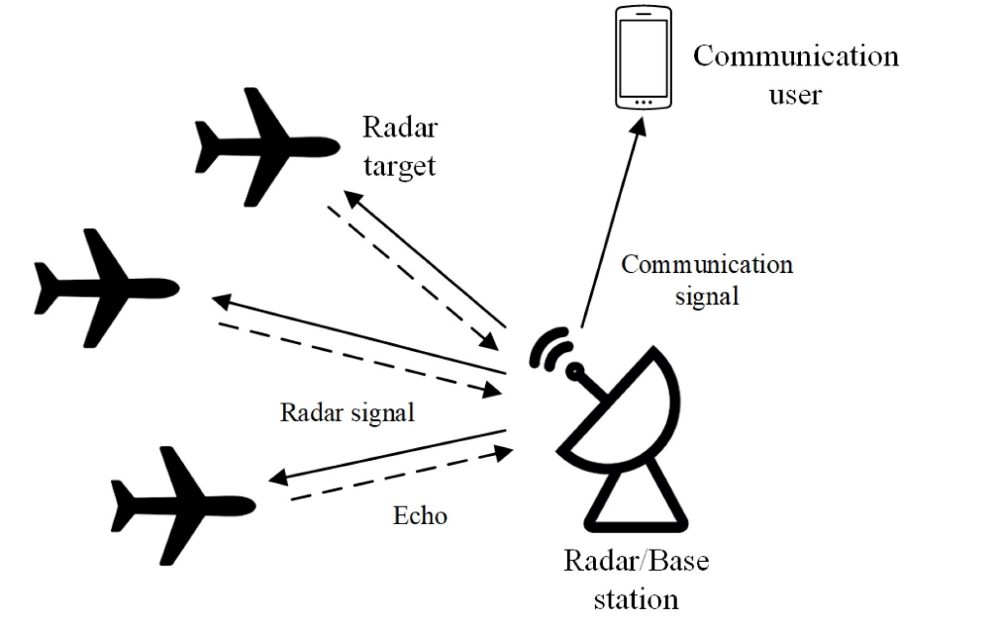
其中多天线BS将数据发射到下行链路用户，同时在相同毫米波信道上同时检测多个雷达目标。为了最小化通信和雷达波束成形误差的总和，作者制定了一个加权波束成形器设计问题，该问题受非凸恒模约束和发射功率预算的约束。
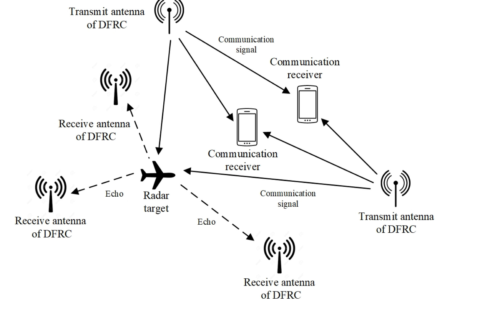
与上述考虑共定位天线的工作不同，[122] 的作者考虑了一个通用的分布式DFRC系统，该系统同时服务于多个信号天线发射机，并检测具有空间分离的发射和接收天线的多个目标，如图14所示。设计目标是分别根据cramer-rao边界 (CRB) 和Shannon的容量实现定位精度和通信速率。为此，作者提出了一个问题，该问题确定了分布式DFRC发射机的功率分配，以最大程度地减少均方定位误差，同时要满足多个接收机的目标通信速率要求。作者证明了所提出问题的凸性，并采用标准的注水算法来获得最佳的功率分配解决方案。
参考文献1 考虑由RF能量收集2 供电的DFRC发射器。具体地，DFRC发射器首先从无线功率信标采集RF能量，然后用作JRC基站。目标是在雷达和通信性能的约束下最小化功率信标的发射功率。
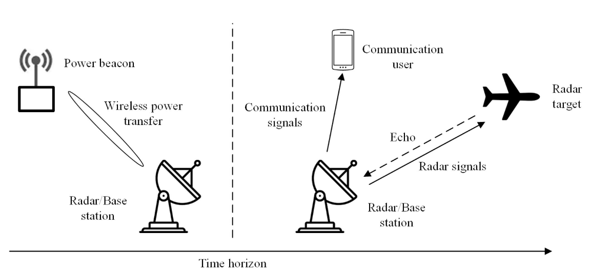
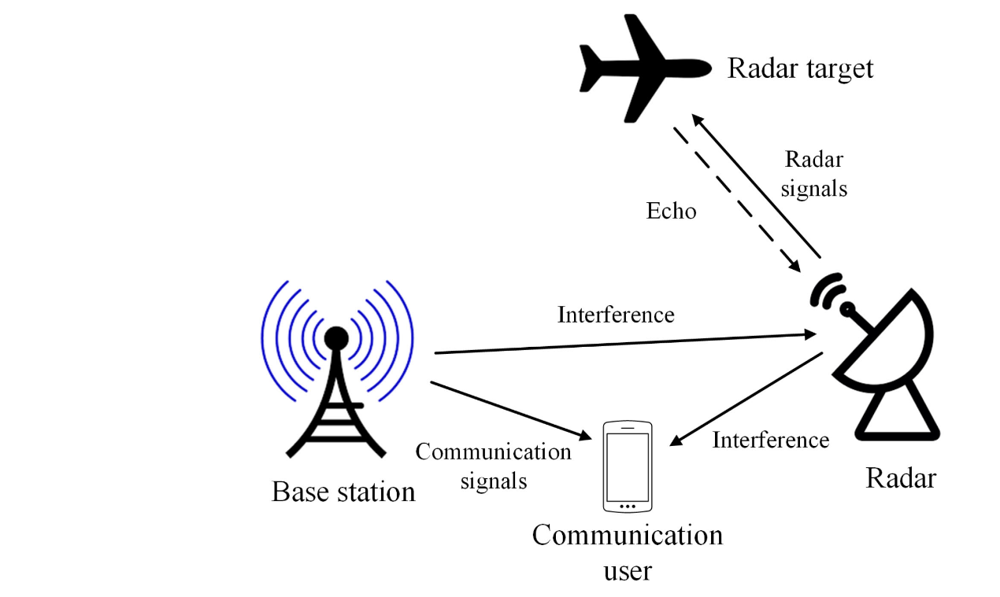
CRC系统中的功率分配: 其中通信子系统在与雷达子系统相同的频带上操作，这显著提高了频谱效率。参考文献1考虑具有单个通信用户和雷达的CRC系统。为了使雷达SINR相对于受下行链路通信速率和功率限制的单个目标最大化，作者提出了一个问题，该问题确定了通信的发射协方差矩阵，雷达的发射预编码器，以及雷达子采样，以相对于下行链路通信速率和功率约束最大化雷达SINR。通过顺序凸规划技术解决该问题。
由于频谱共享，雷达和通信子系统由于彼此施加的干扰而相互损害。干扰管理在通信和雷达子系统的性能中起着关键作用。与现有无线通信系统中的干扰管理主要侧重于减轻通信传输之间的干扰不同，JRC系统的目标是减轻雷达和通信子系统的交叉干扰。
从系统信息可用性的角度来看，CRC系统的设计可以分为三种类型: 非合作，合作和协同设计。对于非合作和合作类型的系统，在子系统之间有和没有信息交换的情况下设计了干扰管理方案。此外，协同设计的系统例如在波形和发射功率方面联合配置子系统。从设计目标的角度来看，干扰管理的研究可以分为两类: 通信接收机处的雷达干扰消除和雷达接收机处的通信干扰消除。
在雷达接收器处，除了雷达目标回波之外，存在从诸如建筑物和树木的其它物体反射的不想要的信号。这些不想要的信号被称为杂波，其被认为是要在雷达接收器处去除的干扰。
在CRC系统中，交叉干扰是独立的，并且在每个单独的雷达和/或接收器处执行消除。不同地，在DFRC系统中，通信信号与雷达目标回波相关，因为它们来自相同的源。消除雷达目标回波中的通信信号涉及以原始形式重建接收到的信号，这比通信系统中的干扰消除更具挑战性，因为不精确地减去重建信号会导致更多的残留，从而导致雷达动态范围的严重下降，通过雷达处理一系列信号强度的能力来衡量。
JRC有望在具有高密度基站和移动设备的动态无线环境中实现。这在JRC系统中引发了大量的访问和资源管理问题。